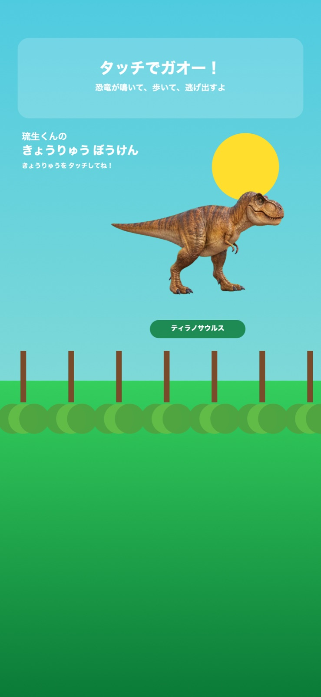
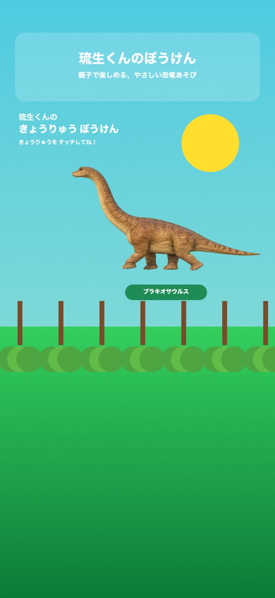

恐竜にタッチ
画面にいる恐竜をタッチ。鳴き声や足音とともに動く様子を楽しめます。
TOUCH. ROAR. EXPLORE.
鳴いて、歩いて、逃げ出して。
小さな指から始まる、恐竜あそび。
「琉生くんのぼうけん」は、画面の恐竜に
タッチして遊ぶiPhoneアプリです。
むずかしい操作や登録はありません。
無料 · iOS 18以降のiPhoneに対応

HOW TO PLAY
画面にいる恐竜をタッチ。鳴き声や足音とともに動く様子を楽しめます。
ティラノサウルス、ブラキオサウルス、トリケラトプス、ステゴサウルスが登場します。
バージョン1.1では2匹が登場。2匹目にもタッチして、名前や動きを楽しめます。

A LITTLE ADVENTURE
恐竜の名前を呼んでみる。
次にどう動くか、いっしょに見てみる。
親子で画面を囲んで、気軽に遊べるつくりです。
音を出せない場所では、アプリ内のボタンで音をオフにできます。
最新の対応条件はApp Storeへ ↗FOR PARENTS
画面の恐竜をタッチして、鳴き声と動きを楽しみます。専用アカウントの登録は不要です。
iOS 18以降のiPhoneに対応しています。最新の対応機種・配信条件はApp Storeでご確認ください。
SHUNEI LABのメール・X窓口へお寄せください。端末やiOSのバージョン、発生した状況を添えていただくと確認しやすくなります。個人情報を含む画像の添付はお控えください。